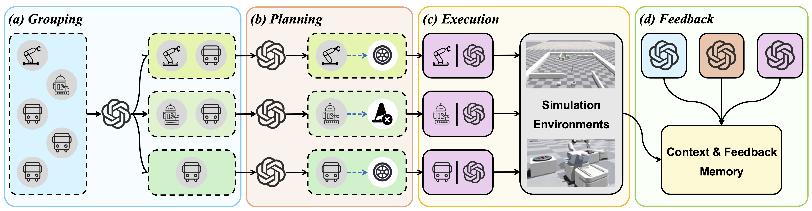
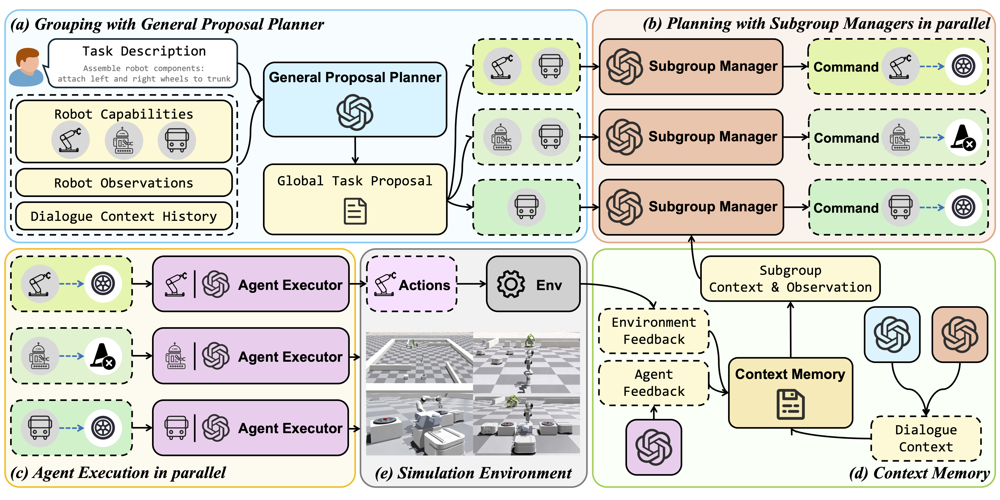
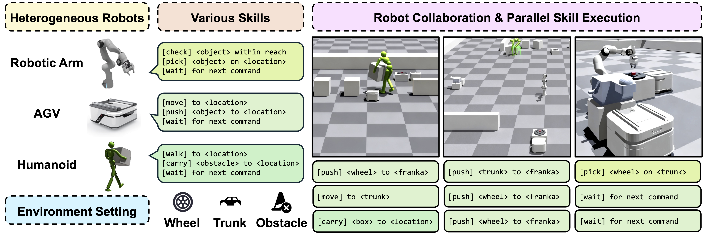

TL;DR: We introduce CLiMRS, an adaptive group negotiation framework among multiple LLMs that enables multi-robot collaboration, inspired by human teamwork. CLiMRS operates through a grouping–planning–execution–feedback loop, enabling efficient long-horizon planning and robust execution. We also present CLiMBench, a heterogeneous multi-robot benchmark with challenging assembly tasks.

Multi-robot collaboration tasks often require heterogeneous robots to work together over long horizons under spatial constraints and environmental uncertainties. Although Large Language Models (LLMs) excel at reasoning and planning, their potential for coordinated control has not been fully explored.
Inspired by human teamwork, we present CLiMRS (Cooperative Large-Language-Model-Driven Heterogeneous Multi-Robot System), an adaptive group negotiation framework among LLMs for multi-robot collaboration. This framework pairs each robot with an LLM agent and dynamically forms subgroups through a general proposal planner. Within each subgroup, a subgroup manager leads perception-driven multi-LLM discussions to get commands for actions. Feedback is provided by both robot execution outcomes and environment changes. This grouping–planning–execution–feedback loop enables efficient planning and robust execution.
To evaluate these capabilities, we introduce CLiMBench, a heterogeneous multi-robot benchmark of challenging assembly tasks. Our experiments show that CLiMRS surpasses the best baseline, achieving over 40% higher efficiency on complex tasks without sacrificing success on simpler ones. Overall, our results demonstrate that leveraging human-inspired group formation and negotiation principles significantly enhances the efficiency of heterogeneous multi-robot collaboration.
CLiMRS comprises five core modules for multi-LLM driven planning and execution in heterogeneous multi-robot collaboration:
(a) a general proposal planner that forms dynamic agent groups,
(b) multiple subgroup managers that generate local agent commands,
(c) multiple agent executors that produce robot skills and return agent-level execution feedback,
(d) a simulation environment for real-time interaction and provides environment feedback,
(e) a context memory module that records all inter-agent dialogues and feedback.

